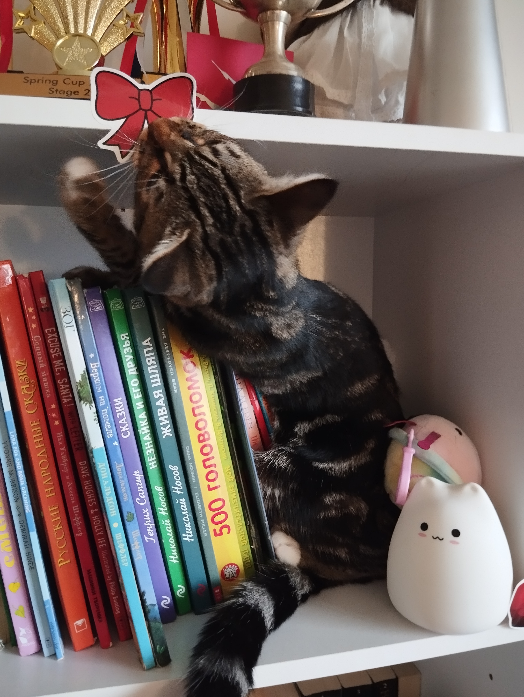
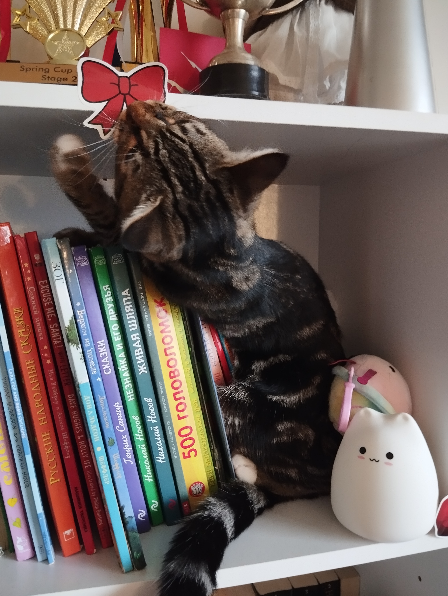

Adele is an incredibly playful kitten! And really one could even argue this page is pointless since she plays with ANYTHING! However she has a few things that she loves to play with more then others. Here are the things she plays with the most!
This is probably the thing she plays with the most. Any and I mean ANY hair pin that was unlucky enough to end up on the ground, will become her toy for the next 10 minutes. Normally we take it away if we have to go sleep or get out of the house. But if we don't she can comfortably keep playing with it for an hour straight.
This one is a little bit different, she doesn't exactly play with it, not always, but most of the time, she just cuddles it! Most of the times she is sleeping, she would have it either next to her, or be hugging it with one of her paws. She loves him so much, she even licks him sometimes, which is absolutely adorable!
Everytime, she can get even a tiny glimpse of an inscect, she is NOT letting it escape. She can chase a single moth, either until it hides so far that it would be impossible to get, or she does catch it. Any inscect at all, if she sees it, she's going to chase it all around the house, and even make some hunting sounds(really cute sounds though:]). She is also very brave, and will hunt any spider or mosquito, which even me and mum are afraid to come next to.
 >
>
>
>